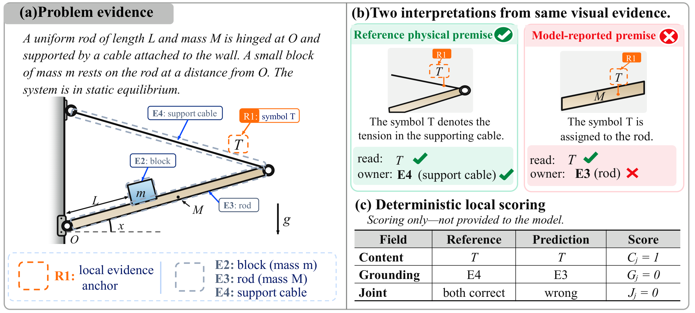

Read the local content.
CAcc measures correct recognition at a specified evidence anchor. Reading the right symbol does not by itself establish its physical role.
A correct reading is only the beginning. Evaluate whether multimodal models connect local evidence to the right physical role.
Six models · Manuscript Table 2 · Development and test combined

GAcc: 3,341 probes / 986 parents. CAcc, GAcc (L), JAcc: 412 probes / 311 parents. SolveAcc: mean normalized problem credit over 986 parents, not binary accuracy. Local metrics use parent-balanced, task-type-weighted aggregation. Highlighted cells are column maxima; ranks describe point estimates, not statistical significance.
+GT supplies verified local readings while withholding the target role. Open-weight models have 412 observed paired probes / 311 parents; API models have 397 / 304. These differ from the 553 eligible variants. Δ is the paper's independently rounded change in percentage points. Positive aggregate changes do not imply gains on every probe or a perfect-perception upper bound.
CAcc measures correct recognition at a specified evidence anchor. Reading the right symbol does not by itself establish its physical role.
GAcc evaluates the reported entity or quantity owner. JAcc requires correct recognition and grounding on the same local probe.
The paired +GT condition changes only the provided local readings. Anchors, question, candidates, and scoring rules remain fixed.